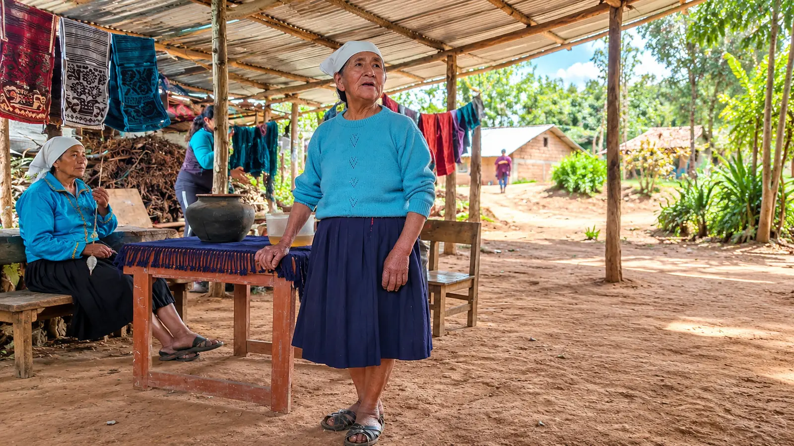

Capacitación artesanal
Capacitación de 15 mujeres en técnicas tradicionales de tejido con telar de cintura, fortaleciendo sus conocimientos y capacidades artesanales.
PROYECTO EN BÚSQUEDA DE FINANCIAMIENTO
Colcamar, Luya, Amazonas, Perú

El proyecto Rescate de Saberes Tradicionales en Tejido y Cerámica para el Turismo Vivencial es una iniciativa de Acobia Perú que propone fortalecer las capacidades artesanales de las mujeres de Colcamar, en la región Amazonas.
La propuesta busca recuperar, conservar y transmitir las técnicas ancestrales de tejido y cerámica tradicional, promoviendo la preservación de los conocimientos culturales de la comunidad.
Asimismo, contempla el desarrollo de oportunidades económicas mediante la comercialización de productos artesanales y su vinculación con el turismo vivencial.
Actualmente, esta iniciativa se encuentra en búsqueda de financiamiento y aliados estratégicos para su implementación.
Fortalecer las capacidades artesanales de 15 mujeres de la comunidad de Colcamar mediante la preservación de técnicas ancestrales de tejido, promoviendo su vinculación con oportunidades de comercialización y turismo vivencial.
Capacitación de 15 mujeres en técnicas tradicionales de tejido con telar de cintura, fortaleciendo sus conocimientos y capacidades artesanales.
Recuperación, conservación y transmisión de las técnicas tradicionales de tejido y cerámica como expresiones de la identidad cultural de la comunidad.
Promoción de oportunidades de comercialización de productos artesanales y su vinculación con iniciativas de turismo vivencial, permitiendo que los visitantes conozcan y valoren las expresiones culturales de Colcamar.
El proyecto está dirigido a 15 mujeres de la comunidad de Colcamar, provincia de Luya, región Amazonas, así como a sus familias.
Mediante el fortalecimiento de sus capacidades artesanales, se busca promover la preservación de sus conocimientos tradicionales y generar nuevas oportunidades económicas vinculadas a la producción artesanal.
A través de esta iniciativa, Acobia Perú busca fortalecer las capacidades artesanales de 15 mujeres mediante la preservación y transmisión de técnicas ancestrales de tejido.
También se espera contribuir a la continuidad de las prácticas artesanales tradicionales y al desarrollo de oportunidades económicas mediante la comercialización de productos con identidad cultural y el turismo vivencial.
Esta iniciativa requiere financiamiento y alianzas estratégicas para su implementación.
Invitamos a las instituciones públicas y privadas, organizaciones de cooperación y entidades financiadoras interesadas en la preservación del patrimonio cultural y el fortalecimiento de las capacidades de las mujeres a conocer esta propuesta.
Contactar con Acobia Perú